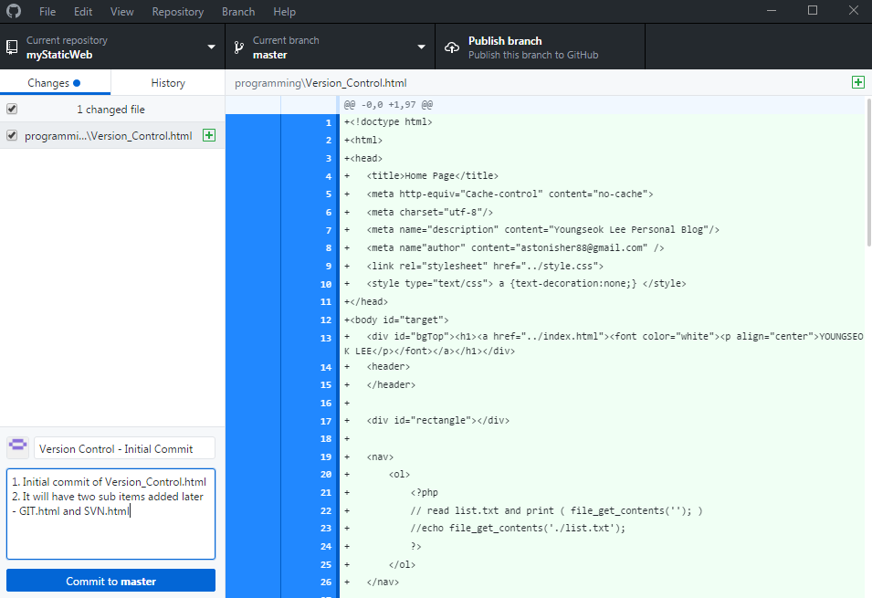
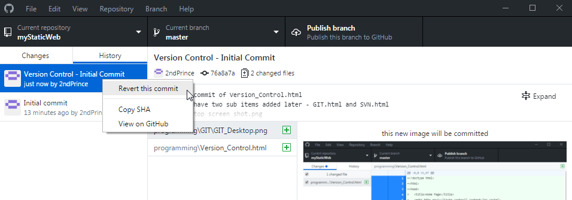
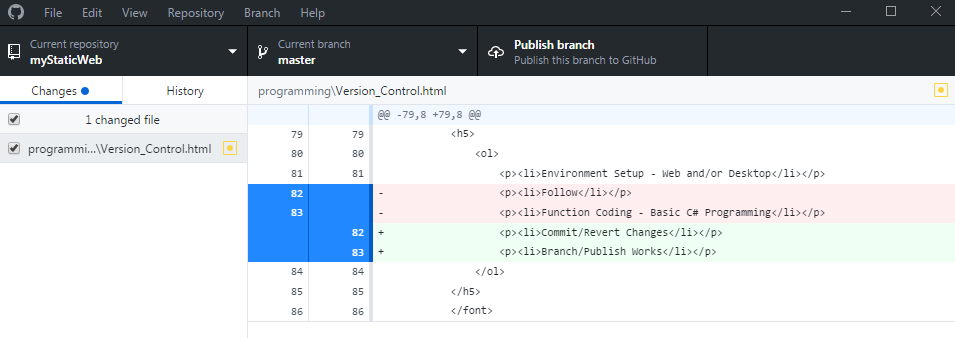

Why GIT?
Updated on Aug 29th, 2017
GIT is the most powerful and popular version control software.
Here, it covers simple but most effective functions such as
commit/revert change and branch.
"Commit" uploads files to the GIT storage.
We want to commit files after we make desired changes.
"Revert" returns files to older versions.
We want to revert files once current files are so corrupted to fix.
For example, we designed a calculator winform application. By committing our calculator project, our source files are safe and always there.
The next day, we tried something new on the calculator program by modifying 10 source files and after all they did not quite go well.
Don't worry. We can simply revert back to our old files from yesterday like time travelling.
"Branch" makes the calculator revert work even easier. Whenever we want to try something new,
we don't know whether the experiment will work and we want to commit our changes.
This is when we branch our work from master branch to test(I named) branch. The test branch will
have exact copies of our master data and we are free to apply our experiments.
We can diff what files are updated and decide to include.

There are two location access to GIT available: Web and Desktop. Once we install desktop version, our local files are under the full control. Local environment speeds up the work. The left section (picture above) specifies what changes I have made: This case, we have added a file called "Version_Control.html." It is always good to write comments on commit for future memory.

Go to the history tab and right click to see the revert message. We can simply revert our recent changes to any older version we wish to. To find what old versions to revert back, comments are always helpful to decide although GIT shows the file diff.

Suppose we have modified the file. The GIT keeps track of changes line 82 and 83 two red highlights are removed with the green ones added. To create branch, click on the top menu tab branch, and start new work from there. The picture is on master branch (by default), we can select any other branch and publish branch (commit to master).